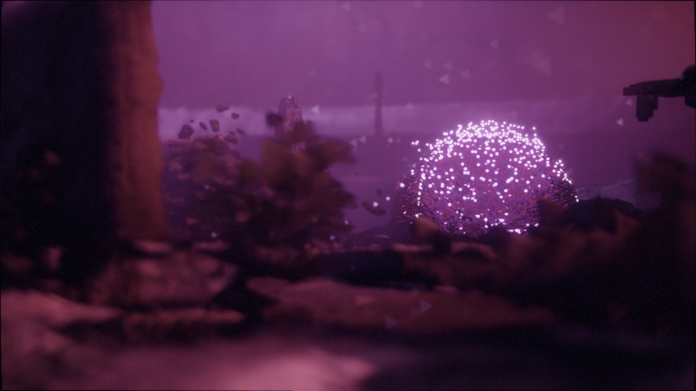
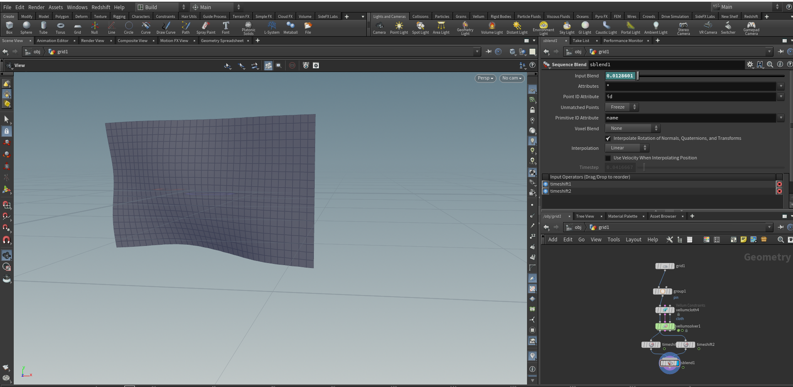
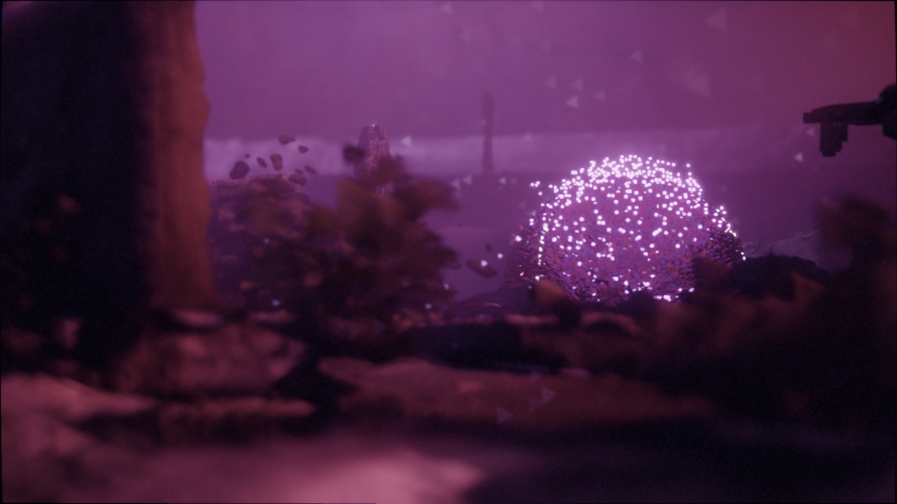
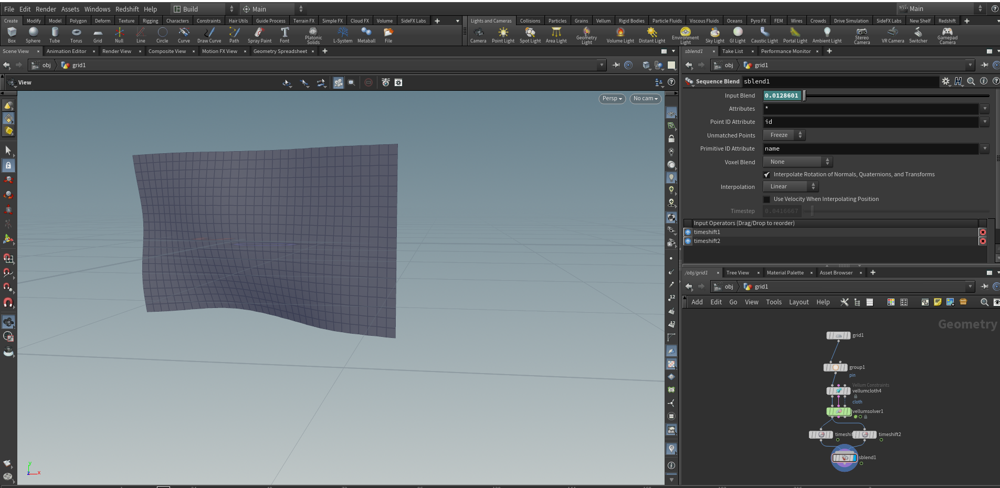

Animation
I am proficient in processing and using different kinds of data to
create audiovisual installations and multimedia art pieces.
Utilizing Blender, Touchdesigner, Houdini, and Computer Science
skills, I create media for local bands, businesses, and my own
personal narrative projects.
This work ranges from realtime renders and performances to music
videos, virtual productions, and digital installations.
 


